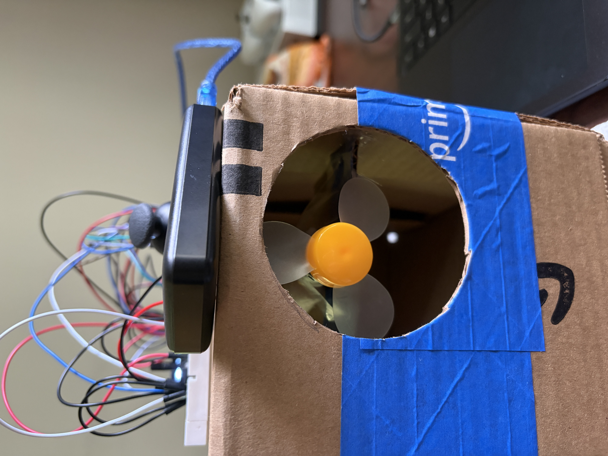
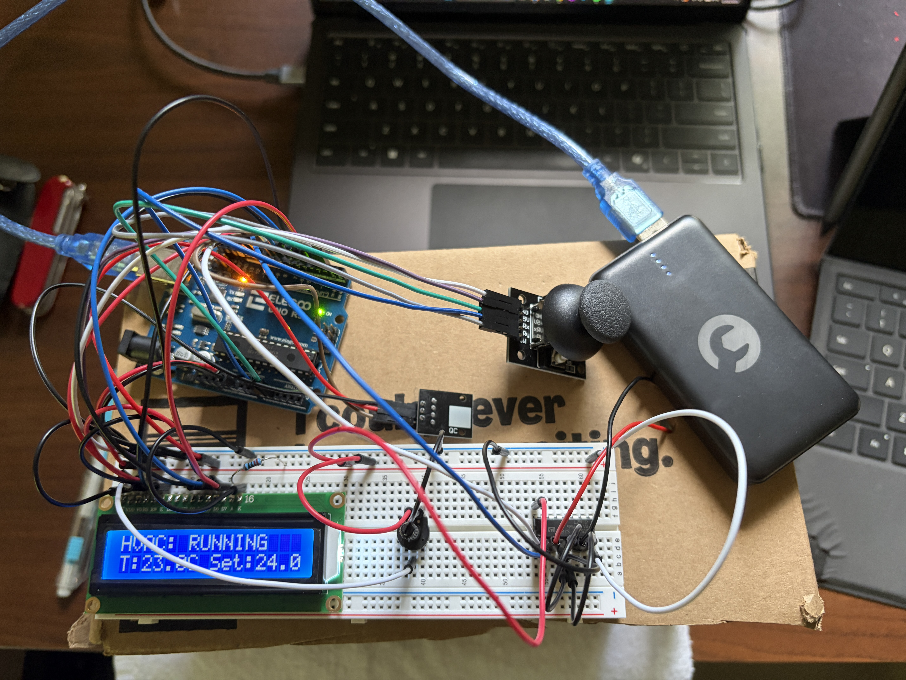

Embedded Systems • Feedback Control • Arduino • PWM • Sensors
I designed and built a small-scale HVAC control system to regulate the temperature of an enclosed microclimate using closed-loop feedback. An Arduino monitored the enclosure temperature and automatically controlled a ventilation fan according to the difference between the measured temperature and a user-selected setpoint.
The system combined temperature sensing, proportional feedback control, PWM motor control, an LCD dashboard, and joystick-based user input. The goal was to create a complete embedded control system that could sense environmental conditions, make a control decision, drive a physical actuator, and provide real-time information to the user.


The Arduino periodically sampled the temperature inside the microclimate using a digital temperature sensor. The measured temperature was compared with the desired setpoint to determine whether additional ventilation was required.
Sensor readings were checked before being incorporated into the controller so invalid measurements would not overwrite the most recent valid temperature value.
I implemented proportional feedback control in which the fan command depended on the temperature error between the measured temperature and the selected target. Larger temperature differences produced a stronger ventilation command, while the fan output decreased as the enclosure approached the desired temperature.
A small temperature deadband was included around the target to prevent unnecessary fan switching when the system was already close to the setpoint.
Fan speed was controlled using PWM through an L293D motor driver. During testing, I accounted for the practical minimum drive level required to keep the physical fan rotating reliably.
Combining proportional control with a minimum usable fan command allowed the software controller to account for a real actuator limitation rather than assuming the motor would respond linearly across the entire PWM range.
The system included a 16×2 LCD that displayed the current operating state, measured temperature, and target temperature. This provided real-time feedback without requiring the Arduino to remain connected to a computer.
An analog joystick provided a simple embedded user interface for modifying the target temperature. A button press switched between normal monitoring and setpoint-editing modes, while joystick movement adjusted the selected temperature.
Temperature sampling and LCD updates were scheduled using Arduino timing functions so the main control loop could continue handling multiple system tasks instead of relying entirely on long blocking delays.
The firmware coordinated sensor acquisition, feedback control, PWM output, display updates, and user input within the same embedded application.
I tested the controller as a complete physical system rather than evaluating the firmware independently. Testing included temperature measurement, setpoint changes, LCD operation, joystick input, ventilation response, and PWM fan behavior.
The completed prototype demonstrated closed-loop operation in which the ventilation response automatically changed according to the measured temperature relative to the selected setpoint down to 0.5 °C error.